…OK, maybe it is, but it's a little more than that. This is (or rather will be) a site to assist students at the University of Hull find information about society events in one centralised place.
View on GitHub
Made with  and